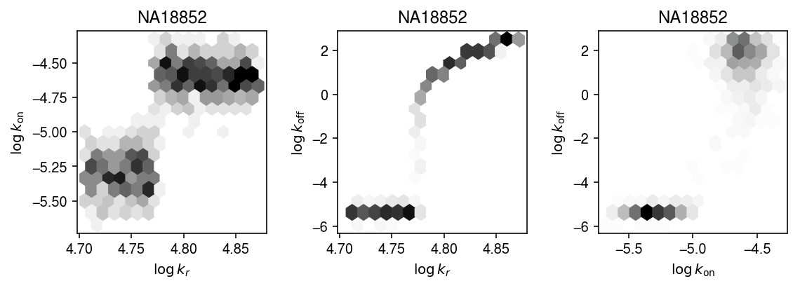
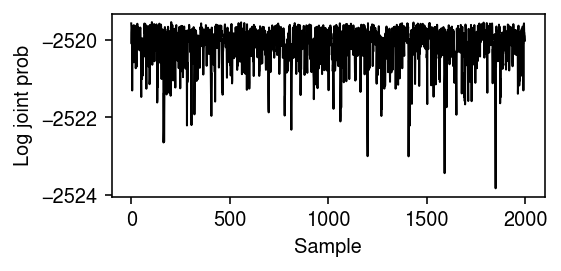

Differential variance analysis
Table of Contents
Introduction
We previously hypothesized that QTLs could disrupt the mechanisms controlling the variance of gene expression, and therefore reveal new insights into the genetic regulation of differentiation and disease. To investigate this hypothesis, we directly observed gene expression variance across 53 individuals using scRNA-seq, and sought to identify dispersion QTLs (dQTLs) which could alter the variance of gene expression across cells within a single individual, independently of altering the mean expression. However, we failed to discover such QTLs, and demonstrated that variance QTLs can be explained by effects on mean expression (Sarkar et al. 2019). \( \DeclareMathOperator\Poi{Poisson} \DeclareMathOperator\B{Beta} \DeclareMathOperator\E{E} \DeclareMathOperator\Gam{Gamma} \DeclareMathOperator\KL{\mathcal{KL}} \DeclareMathOperator\N{Normal} \DeclareMathOperator\V{V} \newcommand\delmu{\delta_{\mu}} \newcommand\delphi{\delta_{\phi}} \newcommand\const{\mathrm{const}} \newcommand\kr{k_r} \newcommand\kon{k_{\text{on}}} \newcommand\koff{k_{\text{off}}} \newcommand\vtheta{\boldsymbol{\theta}} \newcommand\vx{\mathbf{x}} \newcommand\vs{\mathbf{s}} \newcommand\vz{\mathbf{z}} \)
Before attempting to map dQTLs in a followup study, we need to produce evidence that there are such effects to find in human cell types. Essentially no studies demonstrate mechanistic evidence of such effects in human tissues. Many studies measure gene expression variance in human tissues without estimating the effect of perturbation (e.g. Raj et al. 2006, Shalek et al. 2013; Shalek et al. 2014). Martinez-Jimenez et al. 2018 (re-analyzed by Eling et al. 2018) showed that aging changes variability of mouse CD4+ cell gene expression; however, clearly this perturbation is a complex combination of environmental factors. (This data was not generated using UMIs, further complicating the analysis.) The strongest evidence is presented by Wills et al. 2013, who demonstrated that perturbation of human naive B lymphocytes with a GSK3 inhibitor leads to changes in variance of downstream gene expression (as measured by qPCR).
Here, we develop a method to test for differential variance, and use existing scRNA-seq datasets to ask whether there are effects which can alter gene expression variance independent of altering mean gene expression.
Setup
import anndata import itertools as it import numpy as np import pandas as pd import pickle import poisbeta import scanpy as sc import scipy.io as si import scipy.special as sp import scipy.stats as st import scmodes import sklearn.decomposition as skd import sqlite3 import torch import torch.utils.tensorboard as tb
%matplotlib inline %config InlineBackend.figure_formats = set(['retina'])
import colorcet import matplotlib.pyplot as plt plt.rcParams['figure.facecolor'] = 'w' plt.rcParams['font.family'] = 'Nimbus Sans'
Methods
Mechanistic basis of effects on variance
A simple model for transcriptional regulation is the telegraph model (Peccoud and Ycart 1995, Raj et al. 2006, Kim and Marioni 2013, Munsky et al. 2013). The steady state of this model can be characterized as a Poisson-Beta distribution
\begin{align} m_i \mid \kr, p_i &\sim \Poi(\kr p_i)\\ p_i \mid \kon, \koff &\sim \B(\kon, \koff), \end{align}where:
- \(m_i\) is the number of molecules in sample \(i\) (considering one gene)
- \(\kr\) is the rate of transcription
- \(\kon\) is the rate of off \(\rightarrow\) on promoter switching
- \(\koff\) is the rate of on \(\rightarrow\) off promoter switching
and rates are scaled by the decay rate. Under this model
\begin{align} E[m_i] &= \kr \frac{\kon}{\kon + \koff}\\ V[m_i] &= \kr \frac{\kon}{\kon + \koff} + \kr^2 \frac{\kon\koff}{(\kon + \koff)^2 (\kon + \koff + 1)}\\ \text{Fano factor} &= 1 + \frac{\kr\koff}{(\kon + \koff) (\kon + \koff + 1)} \end{align}It follows that an effect which changes variance while leaving the mean unchanged must leave \(p_i\) unchanged, i.e. equally scale \(\kon\) and \(\koff\). This fact raises several questions:
- Do we know of such a biological mechanism?
- Should we expect to find one?
- Does such an effect require convergence of multiple biological mechanisms?
- This model assumes all cells are described by the same kinetic parameters. What if subsets of cells change kinetic parameters in different directions?
The Poisson-Beta model describes the process which generates the molecules present in each cell; however, it does not include measurement error. To model measurement error, assume there are \(m_{ij}\) molecules from gene \(j\) in cell \(i\), with \(m_i^+\) molecules total, but we only observe a random sample \(x_{i1}, \ldots, x_{ip}\) of the available molecules, in which case
\[ x_{i1}, \ldots, x_{ip} \mid x_i^+ \sim \operatorname{Multinomial}(x_i^+, \lambda_{i1}, \ldots, \lambda_{ip}) \]
where \(x_i^+ \triangleq \sum_j x_{ij}\), \(\lambda_{ij} \triangleq m_{ij} / m_i^+\), and we have assumed that \(x_i^+ \ll m_i^+\). This can be transformed into a Poisson model (Baker 1994)
\[ x_{ij} \sim \Poi(x_i^+ \lambda_{ij}), \qquad j = 1, \ldots, p \]
Therefore, observed molecule counts \(x_{ij}\) are generated as Poisson sampling on top of a Poisson-Beta generative process
\begin{align} x_{ij} &\sim \Poi(x_i^+ m_{ij} / m_i^+)\\ m_{ij} \mid \kr^{(j)}, p_{ij} &\sim \Poi(\kr^{(j)} p_{ij})\\ p_{ij} \mid \kon^{(j)}, \koff^{(j)} &\sim \B(\kon^{(j)}, \koff^{(j)}). \end{align}However, focusing on gene \(j\), we have
\[ x_{ij} \sim \Poi(x_i^+ m_{ij} / m_i^+) \approx \operatorname{Binomial}(m_{ij}, x_i^+ / m_i^+). \]
Using a well-known result about binomial sampling of a Poisson-distributed random variable (e.g. Gerard 2019), we have
\[ x_{ij} \sim \Poi(x_i^+ \kr^{(j)} p_{ij} / m_i^+). \]
There is a degree of freedom in the Multinomial-Poisson transform, namely that the Poisson rates can be arbitrarily scaled. If we scale the rates by \(m_i^+\), we recover the previously proposed model of Kim and Marioni 2013. Now suppose we fit a Poisson-Gamma model to the observed data, meaning we assume variation in \(\lambda_{ij}\) is due to stochastic transcription and follows a Gamma distribution
\begin{align} x_{ij} \mid x_i^+, \lambda_{ij} &\sim \Poi(x_i^+ \lambda_{ij}) \\ \lambda_{ij} \mid \mu_j, \phi_j &\sim \Gam(\phi_j^{-1}, \phi_j^{-1} \mu_j^{-1}) \end{align}where:
- \(\mu\) denotes the latent mean gene expression
- \(\phi\) denotes the overdispersion parameter (relative to Poisson)
Under the Poisson-Gamma model for gene \(j\):
\begin{align} E[x_i] &= x_i^+ \mu \\ V[x_i] &= x_i^+ \mu + (x_i^+ \mu)^2 \phi \\ \text{Fano factor} &= 1 + \phi \end{align}These results suggest the mean \(\mu\) and overdispersion \(\phi\) will be related to each other, through their dependence on \(\kr, \kon, \koff\). This possibility raises several questions:
- If we do find effects on \(\phi\), should we expect them to be independent of effects on \(\mu\)?
- Eling et al. 2018 claim data demonstrate this relationship, and propose to correct the relationship between \(\mu\) and \(\phi\).
- Will this approach find something other than differences in kinetic parameters? Why not just test for parameter differences in that model?
Frequentist approaches to detect differential variance
The simplest approach begins from a generative model for the data
\begin{align} x_{ij} \mid x_i^+ &\sim \Poi(x_i^+ \lambda_{ij}) \\ \lambda_{ij} \mid z_i &\sim g_{z_i}(\cdot), \end{align}where
- \(x_{ij}\) is the number of molecules in sample \(i\) mapping to gene \(j\)
- \(x_i^+\) is the total number of molecules in sample \(i\)
- \(z_i\) is an indicator variable denoting which group sample \(i\) belongs to
Under this model, the variance in group \(k\) is \(\V(g_{k})\). A natural approach would be to estimate likelihood ratios comparing the model above to the null model:
\begin{align} x_{ij} \mid x_i^+ &\sim \operatorname{Poisson}(x_i^+ \lambda_{ij}) \\ \lambda_{ij} &\sim g_0(\cdot); \end{align}however, this model comparison will also be significant for differentially expressed genes which do not have significant changes in variance. One alternative is to assume a parametric form on \(g\), e.g.
\begin{equation} g_{k} = \Gam\left(\frac{1}{\phi_k}, \frac{1}{\mu_k \phi_k}\right), \end{equation}where the Gamma distribution is parameterized by shape and rate, estimate differences in \(\phi_k\) or \(V[g_k] = \mu_k^2 \phi_k\), and bootstrap to get \(p\)-values. There are three challenges in this approach:
- Boundary values. In real data, we should expect \(\pi = 0\) (Negative Binomial marginal distribution), and even \(\phi = \infty\) ([Zero-inflated] Poisson marginal distribution) for some genes.
- Mean-variance relationship. Eling et al. 2018 claim there is a relationship even between \(\mu\) and \(\phi\) in the deconvolved Gamma distributions.
- Computational cost. The bootstraps are expensive, and it is difficult to take a hierarchical approach in this setting due to lack of conjugacy.
def est_var(x, s): if x.max() == 0: return 0 else: g = scmodes.ebpm.ebpm_gamma(x, s) if not np.isfinite(g[1]): return np.exp(g[0]) else: return np.exp(2 * g[0] + g[1]) def est_diff_var(x, s, z): var1 = est_var(x[z], s[z]) var2 = est_var(x[~z], s[~z]) return var2 - var1 def diff_var_bootstrap(x, s, z, random_state=None, n_bootstrap=1000): if random_state is not None: np.random.seed(random_state) theta = est_diff_var(x, s, z) B = [] for trial in range(n_bootstrap): B.append(est_diff_var(x, s, np.random.permutation(z))) B = np.array(B) if theta < 0: return theta, (B < theta).mean() else: return theta, (B > theta).mean()
As a second alternative, for each gene \(j\) we can estimate \(g_0\) via Empirical Bayes, and then recover the posterior distribution:
\begin{align} \hat{g} &= \hat\pi \delta_0(\cdot) + (1 - \hat\pi)\operatorname{Gamma}(\frac{1}{\hat\phi}, \frac{1}{\hat\mu \hat\phi})\\ p(\lambda_i \mid x_1, \ldots, x_n, x_1^+, \ldots, x_n^+, \hat{g}) &= \hat\pi \delta_0(\cdot) + (1 - \hat\pi)\operatorname{Gamma}\left(\cdot; x_i + \frac{1}{\hat\phi}, x_i^+ + \frac{1}{\hat\mu \hat\phi}\right) \end{align}We can then take sample variances of latent gene expression values \(E[\lambda_i \mid \cdot]\) across groups.
def post_mean(x, s, log_mu, neg_log_phi): return (x + np.exp(neg_log_phi)) / (s + np.exp(-log_mu + neg_log_phi)) def diff_var_pm(x, s, z): g1 = scmodes.ebpm.ebpm_gamma(x[z], s[z]) lam1 = post_mean(x, s, *g1[:-1]) g2 = scmodes.ebpm.ebpm_gamma(x[~z], s[~z]) lam2 = post_mean(x, s, *g2[:-1])
Bayesian approaches to detect differential variance
In a Bayesian framework, we re-parameterize the model in terms of the difference in mean \(\delmu\) and dispersion \(\delphi\), and estimate the posterior distribution \(p(\delmu, \delphi \mid \vx, \vs, \vz)\). Using all of the data to estimate a Gamma expression model \(\mu_0, \phi_0\), we can form informative priors on \(\vtheta = (\ln\mu, \ln\phi, \delmu, \delphi)\).
\begin{align} x_i \mid s_i, \lambda_i &\sim \Poi(s_i \lambda_i)\\ \lambda_i \mid z_i, \mu, \phi, \delmu, \delphi &\sim \Gam(\exp(-\ln\phi - z_i \delphi), \exp(-\ln\mu - \ln\phi - z_i (\delmu + \delphi)))\\ \ln \mu &\sim \N(\ln\hat\mu_0, 1)\\ \ln \phi &\sim \N(\ln\hat\phi_0, 1)\\ \delmu &\sim \N(0, 1)\\ \delphi &\sim \N(0, 1). \end{align}Variational inference
We can use variational inference to obtain an approximate posterior \(q(\delphi) \approx p(\delphi \mid \vx, \vs, \vz)\), assuming
\begin{equation} q(\vtheta) = q(\ln\mu)q(\ln\phi)q(\delmu)q(\delphi) \end{equation}It is easy to show that the optimal \(q\) – assuming no constraints – are non-standard distributions, so we will instead assume each \(q\) is in the same family as the corresponding prior.
Remark: Assuming each factor \(q\) is in some simple parametric family might lead to underestimates of the posterior variance, which will need to be verified.
To address the fact that the prior is non-conjugate, we can optimize a stochastic objective whose expectation is the ELBO,
\begin{equation} \ell = \E_{q(\vtheta)}\left[\sum_i \ln p(x_i \mid s_i, z_i, \vtheta)\right] - \sum_{\theta \in \vtheta} \KL(q(\theta) \Vert p(\theta)), \end{equation}where the KL terms are analytic, and the first expectation is computed using a Monte Carlo integral and a differentiable re-parameterization (Kingma and Welling 2014).
class DiffVarExprModel(torch.nn.Module): def __init__(self, prior_log_mean, prior_log_inv_disp, prior_scale=1.): assert prior_scale > 0 super().__init__() self.prior_log_mean = prior_log_mean self.prior_log_inv_disp = prior_log_inv_disp self.prior_diff = torch.distributions.Normal(loc=0., scale=prior_scale) self.q_log_mean_mean = torch.nn.Parameter(self.prior_log_mean.loc) self.q_log_mean_raw_scale = torch.nn.Parameter(torch.zeros([1])) self.q_log_inv_disp_mean = torch.nn.Parameter(self.prior_log_inv_disp.loc) self.q_log_inv_disp_raw_scale = torch.nn.Parameter(torch.zeros([1])) # Important: this is actually N(0, ln(2)) self.q_diff_mean_mean = torch.nn.Parameter(torch.zeros([1])) self.q_diff_mean_raw_scale = torch.nn.Parameter(torch.zeros([1])) self.q_diff_inv_disp_mean = torch.nn.Parameter(torch.zeros([1])) self.q_diff_inv_disp_raw_scale = torch.nn.Parameter(torch.zeros([1])) def forward(self, x, s, z, n_samples, writer=None, global_step=None): softplus = torch.nn.functional.softplus _kl = torch.distributions.kl.kl_divergence # We need to keep these around to draw samples q_log_mean = torch.distributions.Normal(loc=self.q_log_mean_mean, scale=softplus(self.q_log_mean_raw_scale)) q_log_inv_disp = torch.distributions.Normal(loc=self.q_log_inv_disp_mean, scale=softplus(self.q_log_inv_disp_raw_scale)) q_diff_mean = torch.distributions.Normal(loc=self.q_diff_mean_mean, scale=softplus(self.q_diff_mean_raw_scale)) q_diff_inv_disp = torch.distributions.Normal(loc=self.q_diff_inv_disp_mean, scale=softplus(self.q_diff_inv_disp_raw_scale)) # These can be computed without sampling kl_mean = _kl(q_log_mean, self.prior_log_mean) kl_inv_disp = _kl(q_log_inv_disp, self.prior_log_inv_disp) kl_diff_mean = _kl(q_diff_mean, self.prior_diff) kl_diff_inv_disp = _kl(q_diff_inv_disp, self.prior_diff) # [n_samples, 1] log_mean = q_log_mean.rsample([n_samples]) log_inv_disp = q_log_inv_disp.rsample([n_samples]) diff_mean = q_diff_mean.rsample([n_samples]) diff_inv_disp = q_diff_inv_disp.rsample([n_samples]) a = torch.exp(log_inv_disp.T - z @ diff_inv_disp.T) b = torch.exp(-log_mean.T + log_inv_disp.T - z @ (diff_mean + diff_inv_disp).T) assert torch.isfinite(a).all() assert torch.isfinite(b).all() err = (x * torch.log(s / b) - x * torch.log(1 + s / b) - a * torch.log(1 + s / b) + torch.lgamma(x + a) - torch.lgamma(a) - torch.lgamma(x + 1)).mean(dim=1).sum() assert err <= 0 elbo = err - kl_mean - kl_inv_disp - kl_diff_mean - kl_diff_inv_disp if writer is not None: writer.add_scalar('loss/err', err, global_step) writer.add_scalar('loss/kl_mean', kl_mean, global_step) writer.add_scalar('loss/kl_inv_disp', kl_inv_disp, global_step) writer.add_scalar('loss/kl_diff_mean', kl_diff_mean, global_step) writer.add_scalar('loss/kl_diff_inv_disp', kl_diff_inv_disp, global_step) return -elbo def fit(self, x, s, z, n_epochs, n_samples=1, log_dir=None, **kwargs): n = x.shape[0] assert x.shape == (n, 1) assert s.shape == x.shape assert z.shape == x.shape assert n_samples >= 1 if log_dir is not None: writer = tb.SummaryWriter(log_dir) else: writer = None global_step = 0 opt = torch.optim.RMSprop(self.parameters(), **kwargs) for epoch in range(n_epochs): opt.zero_grad() loss = self.forward(x, s, z, n_samples, writer, global_step) if torch.isnan(loss): raise RuntimeError('nan loss') loss.backward() opt.step() global_step += 1 return self @property def log_mean(self): return self.q_log_mean_mean.detach().numpy(), np.log1p(np.exp(self.q_log_mean_raw_scale.detach().numpy())) @property def diff_mean(self): return self.q_diff_mean_mean.detach().numpy(), np.log1p(np.exp(self.q_diff_mean_raw_scale.detach().numpy())) @property def lfsr_diff_mean(self): loc, scale = self.diff_mean return min(st.norm(loc, scale).cdf(0), st.norm(loc, scale).sf(0)) @property def log_inv_disp(self): return self.q_log_inv_disp_mean.detach().numpy(), np.log1p(np.exp(self.q_log_inv_disp_raw_scale.detach().numpy())) @property def diff_inv_disp(self): return self.q_diff_inv_disp_mean.detach().numpy(), np.log1p(np.exp(self.q_diff_inv_disp_raw_scale.detach().numpy())) @property def lfsr_diff_inv_disp(self): loc, scale = self.diff_inv_disp return min(st.norm(loc, scale).cdf(0), st.norm(loc, scale).sf(0))
MCMC
To check whether VI understates the posterior variance, or if the posterior is actually multi-modal and VI only captures one mode, we can compare against a collapsed Gibbs sampler, using slice sampling to sample from non-standard conditional densities (Neal 2003).
Letting
\begin{align} a_i &\triangleq \exp(-\ln\phi - z_i \delphi)\\ b_i &\triangleq \exp(-\ln\mu - \ln\phi - z_i (\delmu + \delphi)), \end{align}and marginalizing over \(\lambda_i\), the log joint probability
\begin{multline} \ln p(x_i, \vtheta \mid s_i, z_i) = x_i \ln \left(\frac{s_i}{s_i + b_i}\right) + a_i \ln \left(\frac{b_i}{s_i + b_i}\right) + \ln\Gamma(x_i + a_i) - \ln\Gamma(a_i) - \ln\Gamma(x_i + 1)\\ - \frac{(\ln\mu - \ln\mu_0)^2}{2} - \frac{(\ln\phi - \ln\phi_0)^2}{2} - \frac{\delmu^2}{2} - \frac{\delphi^2}{2} + \const, \end{multline}and the log conditional probabilities (up to a constant) are
\begin{align} \ln p(\ln\mu \mid \cdot) &= \sum_i u_i - (\ln \mu - \ln\mu_0)^2 / 2 + \const\\ \ln p(\ln\phi \mid \cdot) &= \sum_i u_i + v_i - (\ln \phi - \ln\phi_0)^2 / 2 + \const\\ \ln p(\delmu \mid \cdot) &= \sum_i u_i - \delmu^2 / 2 + \const\\ \ln p(\delphi \mid \cdot) &= \sum_i u_i + v_i - \delphi^2 / 2 + \const, \end{align}where
\begin{align} u_i &\triangleq -x_i \ln (s_i + b_i) + a_i \ln b_i - a_i \ln (s_i + b_i)\\ v_i &\triangleq \ln\Gamma(x_i + a_i) - \ln\Gamma(a_i) \end{align}def slice_sample(f, init, width=0.1, max_steps=100, bounds=None, **kwargs): """Return samples from the density proportional to exp(f) f - log density (up to a constant) init - initial value width - typical width of f max_steps - maximum number of times to step out bounds - support of f kwargs - additional arguments to f """ if bounds is None: bounds = (-np.inf, np.inf) # Auxiliary variable defines the slice z = f(init, **kwargs) - np.random.exponential() # Step out left = init - width * np.random.uniform() right = left + width left_steps = int(np.random.uniform() * max_steps) for _ in range(left_steps): if left < bounds[0] or z < f(left, **kwargs): break left -= width left = np.clip(left, *bounds) for _ in range(max_steps - left_steps): if right > bounds[1] or z < f(right, **kwargs): break right += width right = np.clip(right, *bounds) # Step in while right > left: proposal = left + np.random.uniform() * (right - left) if z < f(proposal, **kwargs): return proposal elif proposal < init: left = proposal else: right = proposal raise RuntimeError('failed to find an acceptable sample') def _safe_log(x, eps=1e-8): return np.log(x + eps) def _cond_logpdf(init, u, prior_mean=0): return (u - (init - prior_mean) ** 2 / 2).sum() def diff_var_mcmc(x, s, z, n_samples, sigma0=10, verbose=False, trace=False): assert sigma0 > 0 assert n_samples > 0 init = scmodes.ebpm.ebpm_gamma(x, s) log_mean = init[0] if np.isfinite(init[1]): log_inv_disp = init[1] else: raise RuntimeError("data are not consistent with non-zero variance") diff_log_mean = 0 diff_log_inv_disp = 0 F_log_mean = st.norm(loc=init[0]) F_log_inv_disp = st.norm(loc=init[1]) F_diff_log_mean = st.norm(scale=sigma0) F_diff_log_inv_disp = st.norm(scale=sigma0) samples = [] log_joint_trace = [] for i in range(n_samples): samples.append((log_mean, log_inv_disp, diff_log_mean, diff_log_inv_disp)) a = np.exp(log_inv_disp - z * diff_log_inv_disp) b = np.exp(-log_mean + log_inv_disp - z * (diff_log_mean + diff_log_inv_disp)) u = -x * _safe_log(s + b) - a * _safe_log(s + b) + a * _safe_log(b) v = sp.gammaln(x + a) - sp.gammaln(a) log_mean = slice_sample(_cond_logpdf, init=log_mean, u=u, prior_mean=F_log_mean.mean()) log_inv_disp = slice_sample(_cond_logpdf, init=log_inv_disp, u=u + v, prior_mean=F_log_inv_disp.mean()) diff_log_mean = slice_sample(_cond_logpdf, init=diff_log_mean, u=u) diff_log_inv_disp = slice_sample(_cond_logpdf, init=diff_log_inv_disp, u=u + v) if trace or verbose: log_joint = (st.nbinom(n=a, p=1 / (1 + s / b)).logpmf(x).sum() + F_log_mean.logpdf(log_mean) + F_log_inv_disp.logpdf(log_inv_disp) + F_diff_log_mean.logpdf(diff_log_mean) + F_diff_log_inv_disp.logpdf(diff_log_inv_disp)) assert np.isfinite(log_joint) if trace: log_joint_trace.append(log_joint) if verbose: print(f'sample {i}: {log_joint}') return np.array(samples).reshape(-1, 4), log_joint_trace
Data sets
For null simulations, we use homogeneous populations of sorted cells (Zheng et al. 2017):
- Cytotoxic T cells
- B cells
As a positive control, we re-analyze unstimulated and stimulated naive and effector memory CD4+ T cells from young and old mice from two divergent species (Martinez-Jimenez et al. 2018)
sbatch --partition=mstephens #!/bin/bash test -f E-MTAB-4888.processed.1.zip || curl -O https://www.ebi.ac.uk/arrayexpress/files/E-MTAB-4888/E-MTAB-4888.processed.1.zip test -f raw_data.txt || unzip E-MTAB-4888.processed.1.zip mkdir -p /project2/mstephens/aksarkar/projects/singlecell-ideas/data/E-MTAB-4888 gzip <raw_data.txt >/project2/mstephens/aksarkar/projects/singlecell-ideas/data/E-MTAB-4888/counts.txt.gz
Submitted batch job 61624943
We then analyze single cell RNA-seq time course data through differentiation of iPSCs into cardiomyocytes (Selewa et al. 2019).
STRUCTURE plot
def plot_structure(weights, ax=None, idx=None): if ax is None: ax = plt.gca() prop = np.cumsum(weights, axis=1) if idx is None: idx = np.lexsort(weights.T) for i in range(prop.shape[1]): if i > 0: bot = prop[idx,i - 1] else: bot = None ax.bar(np.arange(prop.shape[0]), weights[idx,i], bottom=bot, color=f'C{i}', width=1, label=f'Topic {i + 1}') ax.set_xlim(0, weights.shape[0]) ax.set_xticks([]) ax.set_ylim(0, 1)
Results
Mean-dispersion relationship
Use scRNA-seq of 9,957 genes in 5,597 iPSCs from 53 donors (Sarkar et al. 2019) to examine the relationship between mean and dispersion.
log_mu = pd.read_csv('/project2/mstephens/aksarkar/projects/singlecell-qtl/data/density-estimation/design1/zi2-log-mu.txt.gz', sep=' ', index_col=0) log_phi = pd.read_csv('/project2/mstephens/aksarkar/projects/singlecell-qtl/data/density-estimation/design1/zi2-log-phi.txt.gz', sep=' ', index_col=0) logodds = pd.read_csv('/project2/mstephens/aksarkar/projects/singlecell-qtl/data/density-estimation/design1/zi2-logodds.txt.gz', sep=' ', index_col=0)
plt.clf() plt.gcf().set_size_inches(3, 3) H = np.histogram2d(log_mu.values.ravel(), log_phi.values.ravel(), bins=200) X, Y = np.meshgrid(H[1], H[2]) plt.contour(X[1:,1:].T, Y[1:,1:].T, H[0], cmap=colorcet.cm['fire'], linewidths=1) plt.xlabel('$\ln(\mu)$') plt.ylabel('$\ln(\phi)$') plt.tight_layout()

Look at zeros and dispersion.
plt.clf() plt.gcf().set_size_inches(3, 3) H = np.histogram2d(logodds.values.ravel(), log_phi.values.ravel(), bins=200) X, Y = np.meshgrid(H[1], H[2]) plt.contour(X[1:,1:].T, Y[1:,1:].T, H[0], cmap=colorcet.cm['fire'], linewidths=1) plt.xlabel('$\mathrm{logit}(\pi)$') plt.ylabel('$\ln(\mu)$') plt.tight_layout()
We previously looked at the relationship between estimated parameters, averaging over all 53 individuals.

Null simulation
Randomly split a homogeneous sample into two groups to generate null data sets.
def null_sim(dat, n1, n2, seed=0): query = sc.pp.subsample(dat, n_obs=n1 + n2, random_state=seed, copy=True) z = np.zeros(n1 + n2).astype(bool) z[:n1] = 1 return query, z def evaluate_null_type1(dat, n=100, min_detect=0.01, n_bootstrap=1000, n_trials=10): result = [] for trial in range(n_trials): x, z = null_sim(dat, n, n, seed=trial) s = x.X.sum(axis=1).A.ravel() for j in range(x.shape[1]): diff, p = diff_var_bootstrap(x.X[:,j].A.ravel(), s, z, n_bootstrap=n_bootstrap) result.append(pd.Series({'trial': trial, 'gene': j, 'n': n, 'diff': diff, 'p': p})) result = pd.DataFrame(result) return result
Read 10X v3 data, which has higher sequencing depth.
dat = anndata.read_h5ad('/scratch/midway2/aksarkar/modes/10k_pbmc_v3.h5ad')
First, apply our approach to a single example.
n1 = 500 n2 = 500 x, z = null_sim(dat, n1, n2, seed=1) s = x.X.sum(axis=1).A.ravel() sc.pp.filter_genes(x, min_cells=0.01 * (n1 + n2))
est_diff_var(x.X[:,0].A.ravel(), s, z)
2.3068812267492158e-11
diff_var_bootstrap(x.X[:,0].A.ravel(), s, z, random_state=1)
Test the benchmark.
test_result = evaluate_null_type1(dat, n=500, n_trials=1)
test_result.head()
0 - f39f19f1-0b74-45a9-bb8b-18a9a4a3227b
Fitting kinetic models directly
Instead of assuming variance of gene expression is driven by stochastic transcription and asking whether the variance changes after some perturbation, we could attempt to ask directly whether the underlying stochastic process changes.
iPSC data
We previously identified 5 variance QTLs in iPSCs, but also found they were all mean QTLs.
Read the data.
x = anndata.read_h5ad('/project2/mstephens/aksarkar/projects/singlecell-ideas/data/ipsc/ipsc.h5ad')
vqtls = pd.read_csv('/project2/mstephens/aksarkar/projects/singlecell-qtl/data/scqtl-mapping/variance.txt.gz', sep=' ', index_col=0)
vqtls.sort_values('p_beta').head(n=5)
chr start end strand num_vars distance \ gene ENSG00000184674 chr22 24384681 24384680 - 477 0.0 ENSG00000113558 chr5 133512730 133512729 - 673 -2801.0 ENSG00000132507 chr17 7210319 7210318 + 496 5218.0 ENSG00000148680 chr10 92617672 92617671 - 669 47915.0 ENSG00000131469 chr17 41150291 41150290 + 515 -32887.0 id var_chr var_start var_end \ gene ENSG00000184674 esv2669470.chr22.24343050 chr22 24343050.0 24397301.0 ENSG00000113558 rs13356194.chr5.133515530 chr5 133515530.0 133515530.0 ENSG00000132507 rs1054378.chr17.7215536 chr17 7215536.0 7215536.0 ENSG00000148680 rs138704692.chr10.92569757 chr10 92569757.0 92569757.0 ENSG00000131469 rs12947287.chr17.41117404 chr17 41117404.0 41117404.0 df dummy a b p_nominal beta \ gene ENSG00000184674 51.0 43.2504 1.033960 59.1680 4.192900e-11 -1.182590 ENSG00000113558 51.0 39.5051 1.066360 37.1031 1.387570e-10 -0.796700 ENSG00000132507 51.0 42.2941 1.069530 73.9335 7.525920e-10 -1.214550 ENSG00000148680 51.0 42.9914 1.035830 43.6306 4.632030e-09 -1.044440 ENSG00000131469 51.0 34.8434 0.902717 23.8075 8.796860e-11 -0.848284 p_empirical p_beta gene ENSG00000184674 0.0001 4.266760e-08 ENSG00000113558 0.0001 2.371110e-07 ENSG00000132507 0.0001 6.094700e-07 ENSG00000148680 0.0001 2.088450e-06 ENSG00000131469 0.0001 7.746900e-06
x.var.loc['ENSG00000184674']
chr hs22 start 24376133 end 24384680 name GSTT1 strand - source H. sapiens Name: ENSG00000184674, dtype: object
with sqlite3.connect('/project2/mstephens/aksarkar/projects/singlecell-qtl/browser/browser.db') as conn: geno = pd.read_sql('select * from mean_qtl_geno where gene = ?', con=conn, params=('ENSG00000184674',)).set_index('ind')['value']
Read the previously fitted point-Gamma distribution for each individual.
log_mu = pd.read_csv('/project2/mstephens/aksarkar/projects/singlecell-qtl/data/density-estimation/design1/zi2-log-mu.txt.gz', sep=' ', index_col=0) log_phi = pd.read_csv('/project2/mstephens/aksarkar/projects/singlecell-qtl/data/density-estimation/design1/zi2-log-phi.txt.gz', sep=' ', index_col=0) logodds = pd.read_csv('/project2/mstephens/aksarkar/projects/singlecell-qtl/data/density-estimation/design1/zi2-logodds.txt.gz', sep=' ', index_col=0)
Plot the observed data and the fitted distributions.
query = x.X.tocsc()[:,(x.var['name'] == 'GSTT1').values].A.ravel() lam = query / x.obs['mol_hs']
cm = plt.get_cmap('Dark2') k = 'ENSG00000184674' plt.clf() fig, ax = plt.subplots(2, 1) fig.set_size_inches(6, 4) bins = np.arange(query.max() + 1) ax[0].hist(query, bins=bins, color='k') ax[0].set_xlabel('Number of molecules') ax[0].set_ylabel('Number of cells') ax[0].set_title(x.var.loc[k, 'name']) ax[0].set_xticks(bins[::2]) grid = np.linspace(0, lam.max(), 1000) for i in log_mu.columns: if i in geno.index: t = log_mu.loc[k, i], log_phi.loc[k, i], logodds.loc[k, i] F = st.gamma(a=np.exp(-t[1]), scale=np.exp(t[0] + t[1])).cdf(grid) # Important: we need to round the imputed dosages ax[1].plot(grid, F, lw=1, alpha=0.35, c=cm(int(np.round(geno.loc[i])))) dummy = [plt.Line2D([0], [0], c=cm(i)) for i in range(3)] ax[1].legend(dummy, np.arange(3), title=vqtls.loc[k, 'id'].split('.')[0], frameon=False) ax[1].set_xlabel('Latent gene expression') ax[1].set_ylabel('CDF') ax[1].set_xlim(0, 7e-5) fig.tight_layout()
Estimate the posterior distribution of kinetic parameters for each individual.
k_params = dict() for i in geno.index: print(f'Fitting individual {i}') keep = (x.obs['chip_id'] == i).values.ravel() xg = query[keep] sg = x.obs['mol_hs'].values[keep] samples, _ = poisbeta.fit_poisson_beta_mcmc(xg, n_samples=1000, ar=1, br=xg.max(), aon=1, bon=100, aoff=1, boff=100) k_params[i] = samples
Write out the samples.
with open('/scratch/midway2/aksarkar/ideas/ipsc-gstt1-post.pkl', 'wb') as f: pickle.dump(k_params, f)
Plot the 95% credible intervals for each parameter in each individual, against genotype.
plt.clf() fig, ax = plt.subplots(1, 3) fig.set_size_inches(8, 3) n = geno.shape[0] for j, (a, t) in enumerate(zip(ax, ['$\log\,k_r$', '$\log\,k_{\mathrm{on}}$', '$\log\,k_{\mathrm{off}}$'])): y = np.array([np.log(k_params[i][-800:,j]).mean() for i in geno.index]) ci = np.array([np.percentile(np.log(k_params[i][-800:,j]), [2.5, 97.5]) for i in geno.index]).T ax[j].errorbar(x=geno.values + np.random.normal(scale=0.1, size=n), y=y, yerr=abs(ci - y), fmt='.', c='k', ecolor='0.7', elinewidth=1, ms=4, ) ax[j].set_xlabel('Imputed dosage') ax[j].set_ylabel(t) fig.tight_layout()
Plot one of the joint posteriors.
names = ['$\log\,k_r$', '$\log\,k_{\mathrm{on}}$', '$\log\,k_{\mathrm{off}}$'] plt.clf() fig, ax = plt.subplots(1, 3) fig.set_size_inches(8, 3) for (s, t), a in zip(it.combinations(range(3), 2), ax): x = np.array([np.log(k_params['NA18852'][-800:,s]) for i in geno.index]) y = np.array([np.log(k_params['NA18852'][-800:,t]) for i in geno.index]) a.hexbin(x=x, y=y, gridsize=15, cmap=colorcet.cm['gray_r']) a.set_xlabel(names[s]) a.set_ylabel(names[t]) a.set_title('NA18852') fig.tight_layout()

Repeat the analysis for the rest of the vQTLs.
k = 'ENSG00000113558' with sqlite3.connect('/project2/mstephens/aksarkar/projects/singlecell-qtl/browser/browser.db') as conn: geno = pd.read_sql('select * from mean_qtl_geno where gene = ?', con=conn, params=(k,)).set_index('ind')['value'] query = x.X.tocsc()[:,list(x.var.index).index(k)].A.ravel() k_params = dict() for i in geno.index: print(f'Fitting individual {i}') keep = (x.obs['chip_id'] == i).values.ravel() xg = query[keep] sg = x.obs['mol_hs'].values[keep] samples, _ = poisbeta.fit_poisson_beta_mcmc(xg, n_samples=1000, ar=1, br=xg.max(), aon=1, bon=100, aoff=1, boff=100) k_params[i] = samples
plt.clf() fig, ax = plt.subplots(1, 3) fig.set_size_inches(8, 3) n = geno.shape[0] for j, (a, t) in enumerate(zip(ax, ['$\log\,k_r$', '$\log\,k_{\mathrm{on}}$', '$\log\,k_{\mathrm{off}}$'])): y = np.array([np.log(k_params[i][-800:,j]).mean() for i in geno.index]) ci = np.array([np.percentile(np.log(k_params[i][-800:,j]), [2.5, 97.5]) for i in geno.index]).T ax[j].errorbar(x=geno.values + np.random.normal(scale=0.1, size=n), y=y, yerr=abs(ci - y), fmt='.', c='k', ecolor='0.7', elinewidth=1, ms=4, ) ax[j].set_title(x.var.loc['ENSG00000113558', 'name']) ax[j].set_xlabel('Imputed dosage') ax[j].set_ylabel(t) fig.tight_layout()
k = 'ENSG00000132507' with sqlite3.connect('/project2/mstephens/aksarkar/projects/singlecell-qtl/browser/browser.db') as conn: geno = pd.read_sql('select * from mean_qtl_geno where gene = ?', con=conn, params=(k,)).set_index('ind')['value'] query = x.X.tocsc()[:,list(x.var.index).index(k)].A.ravel() k_params = dict() for i in geno.index: print(f'Fitting individual {i}') keep = (x.obs['chip_id'] == i).values.ravel() xg = query[keep] sg = x.obs['mol_hs'].values[keep] samples, _ = poisbeta.fit_poisson_beta_mcmc(xg, n_samples=1000, ar=1, br=xg.max(), aon=1, bon=100, aoff=1, boff=100) k_params[i] = samples
plt.clf() fig, ax = plt.subplots(1, 3) fig.set_size_inches(8, 3) n = geno.shape[0] for j, (a, t) in enumerate(zip(ax, ['$\log\,k_r$', '$\log\,k_{\mathrm{on}}$', '$\log\,k_{\mathrm{off}}$'])): y = np.array([np.log(k_params[i][-800:,j]).mean() for i in geno.index]) ci = np.array([np.percentile(np.log(k_params[i][-800:,j]), [2.5, 97.5]) for i in geno.index]).T ax[j].errorbar(x=geno.values + np.random.normal(scale=0.1, size=n), y=y, yerr=abs(ci - y), fmt='.', c='k', ecolor='0.7', elinewidth=1, ms=4, ) ax[j].set_title(x.var.loc[k, 'name']) ax[j].set_xlabel('Imputed dosage') ax[j].set_ylabel(t) fig.tight_layout()
iPSC-CM time course data
Selewa et al. 2019 generated Drop-Seq of iPSCs differentiating into cardiomyocytes at days 0, 1, 3, 7, and 15. Read the data.
counts = si.mmread('/project2/mstephens/aksarkar/projects/singlecell-ideas/data/czi/drop/counts.mtx.gz') genes = pd.read_table('/project2/mstephens/aksarkar/projects/singlecell-ideas/data/czi/drop/genes.txt', header=None) genes.columns = ['name'] cells = pd.read_table('/project2/mstephens/aksarkar/projects/singlecell-ideas/data/czi/drop/cells.txt', sep=' ') cells.columns = ['barcode', 'day', 'ind'] cells['day'] = pd.Categorical(cells['day']) x = anndata.AnnData(counts.T.tocsc(), obs=cells, var=genes) x.write('/project2/mstephens/aksarkar/projects/singlecell-ideas/data/czi/drop/czi-ipsc-cm.h5ad')
y = x[x.obs['ind'] == 'Rep1'] sc.pp.filter_genes(y, min_counts=.01 * y.shape[0]) y.var = y.var.reset_index(drop=True) y.shape y.write('/project2/mstephens/aksarkar/projects/singlecell-ideas/data/czi/drop/czi-ipsc-cm-rep1.h5ad')
y = anndata.read_h5ad('/project2/mstephens/aksarkar/projects/singlecell-ideas/data/czi/drop/czi-ipsc-cm-rep1.h5ad')
Fit a fully unsupervised NMF model to achieve two goals:
- Merge cells across time points which are in the same cell state
- Cluster cells within/across time points to separate cell states
m = skd.NMF(n_components=10, beta_loss=1, solver='mu', init='random', max_iter=1000) l = m.fit_transform(y.X) f = m.components_
Normalize the NMF solution into a topic model.
weights = l * f.sum(axis=1) scale = weights.sum(axis=1, keepdims=True) weights /= scale topics = f / f.sum(axis=1, keepdims=True)
Write out the topic model.
np.save('/scratch/midway2/aksarkar/ideas/ipsc-cm-topic-weights.npz', weights) np.save('/scratch/midway2/aksarkar/ideas/ipsc-cm-topics.npz', topics) np.save('/scratch/midway2/aksarkar/ideas/ipsc-cm-topic-scale.npz', scale)
First, compute the correlation matrix between the topic weights and the day of the protocol.
r = np.corrcoef(pd.get_dummies(y.obs['day']).T, weights.T)[:10,:4] plt.clf() plt.gcf().set_size_inches(4, 4) plt.imshow(r, cmap=colorcet.cm['coolwarm'], vmin=-1, vmax=1) plt.xlabel('Day') plt.xticks(np.arange(4), y.obs['day'].cat.categories) plt.ylabel('Topic') plt.yticks(np.arange(10), 1 + np.arange(10)) cb = plt.colorbar() cb.set_label('Correlation') plt.tight_layout()
We might expect (from a pseudotime perspective) that there are cells “between” days, which would have non-trivial topic weight in multiple days. If there were such cells, we might expect weak positive correlations between multiple days and topics; however, we find only one such topic.
Interestingly, we also find multiple topics correlated with each day. To begin with, examine topics 0 and 4 (which correlate with day 0), and look at expression of pluritpotency markers in cells with maximal topic weight in those topics.
lam = l @ f lam /= y.X.sum(axis=1)
cm = plt.get_cmap('Dark2') plt.clf() fig, ax = plt.subplots(1, 3, sharey=True) fig.set_size_inches(7, 3) for a, k in zip(ax, ['POU5F1', 'SOX2', 'NANOG']): idx = y.var[y.var['name'] == k].reset_index(drop=True).index.astype(int) for j, topic in enumerate([0, 4]): query = lam[np.where(np.argmax(weights, 1) == j)[0],idx] a.hist(query, density=True, bins=np.linspace(0, 2e-3, 25), alpha=0.5, color=cm(j), label=f'Topic {topic}') a.set_xlabel('Latent gene expression') a.set_title(k) ax[0].set_ylabel('Density') ax[-1].legend(frameon=False) fig.tight_layout()
Based on the topic model, we might safely begin by just analyzing each time point as a homogeneous collection of cells. Estimate gene expression mean and variance for each gene in each time point.
point_gamma_res = dict() for k in (0, 1, 3, 7): point_gamma_res[k] = scmodes.ebpm.sgd.ebpm_point_gamma( y.X[y.obs['day'] == k], lr=1e-2, batch_size=128, max_epochs=20, verbose=True)
res = pd.concat({k: pd.DataFrame(np.vstack(v[:-1]).T, columns=['log_mu', 'neg_log_phi', 'logodds']) for k, v in point_gamma_res.items()}, axis='columns') res.to_csv('/scratch/midway2/aksarkar/ideas/ipsc-cm-ebpm-point-gamma.txt.gz')
res = pd.read_csv('/scratch/midway2/aksarkar/ideas/ipsc-cm-ebpm-point-gamma.txt.gz', index_col=0, header=[0, 1])
Look at the trajectories of dispersion over time.
plt.clf() plt.gcf().set_size_inches(3, 3) for k, z in res.loc(axis=1)[:,'neg_log_phi'].iterrows(): if z.mean() > -10: plt.plot(z.values.ravel(), c='k', lw=1, alpha=0.1) plt.xlabel('Day') plt.xticks(np.arange(4), [0, 1, 3, 7]) plt.ylabel('$-\log\ \phi$') plt.tight_layout()
Look at the trajectories of variance over time.
plt.clf() plt.gcf().set_size_inches(3, 3) for k, z in res.iterrows(): var = np.exp(2 * z.loc[:,'log_mu'] - z.loc[:,'neg_log_phi']) if np.median(var) > 1e-6: plt.plot(var.values.ravel(), c='k', lw=1, alpha=0.25) plt.xlabel('Day') plt.xticks(np.arange(4), [0, 1, 3, 7]) plt.ylabel('Variance of latent gene expression') plt.tight_layout()
Extract some interesting examples.
res[np.logical_and(res.loc(axis=1)['0', 'neg_log_phi'] < 2, res.loc(axis=1)['1', 'neg_log_phi'] > 2)].head()
0 1 3 \ log_mu neg_log_phi logodds log_mu neg_log_phi logodds log_mu 38 -8.624235 1.224293 -8.834169 -7.599703 5.335293 -9.648245 -7.419324 127 -8.624235 1.224293 -8.834169 -7.599703 5.335293 -9.648245 -7.419324 254 -8.624235 1.224293 -8.834169 -7.599703 5.335293 -9.648245 -7.419324 286 -8.624235 1.224293 -8.834169 -7.599703 5.335293 -9.648245 -7.419324 320 -8.624235 1.224293 -8.834169 -7.599703 5.335293 -9.648245 -7.419324 7 neg_log_phi logodds log_mu neg_log_phi logodds 38 5.027008 -9.271143 -7.770187 2.8829 -8.345497 127 5.027008 -9.271143 -7.770187 2.8829 -8.345497 254 5.027008 -9.271143 -7.770187 2.8829 -8.345497 286 5.027008 -9.271143 -7.770187 2.8829 -8.345497 320 5.027008 -9.271143 -7.770187 2.8829 -8.345497
NDUFAB1 appears to show a reduction in variance between days 0 and 1, and then a subsequent gain in variance between days 3 and 7.
y.var.iloc[38]
name NDUFAB1 n_counts 5571 Name: 49, dtype: object
Plot the data and the fitted distributions
plt.set_cmap('Dark2') plt.clf() fig, ax = plt.subplots(2, 1) fig.set_size_inches(5, 4) days = [0, 1, 3, 7] query = y.X[:,38].A.ravel() bins = np.arange(query.max() + 1) for i, k in enumerate(days): ax[0].hist(query[y.obs['day'] == k], bins=bins, color=f'C{i}', alpha=0.5) ax[0].set_xlabel('Number of molecules') ax[0].set_ylabel('Number of cells') grid = np.linspace(0, 1e-3, 1000) for i, k in enumerate([str(d) for d in days]): log_mu = res.loc[38, (k, 'log_mu')] neg_log_phi = res.loc[38, (k, 'neg_log_phi')] logodds = res.loc[38, (k, 'logodds')] F = st.gamma(a=np.exp(neg_log_phi), scale=np.exp(log_mu - neg_log_phi)).cdf(grid) F = sp.expit(logodds) + sp.expit(-logodds) * F ax[1].plot(grid, F, lw=1, color=f'C{i}', label=f'Day {k}') ax[1].legend(frameon=False) ax[1].set_xlabel('Latent gene expression') ax[1].set_ylabel('CDF') fig.tight_layout()
Look at examples with the opposite trajectory.
res[np.logical_and(res.loc(axis=1)['0', 'neg_log_phi'] > 8, res.loc(axis=1)['1', 'neg_log_phi'] < 4)].head()
0 1 3 \ log_mu neg_log_phi logodds log_mu neg_log_phi logodds log_mu 5851 -4.983784 8.014603 -3.454462 -4.98496 3.259651 -1.306795 -5.037562 6641 -4.983784 8.014603 -3.454462 -4.98496 3.259651 -1.306795 -5.037562 7 neg_log_phi logodds log_mu neg_log_phi logodds 5851 3.340554 -1.143311 -5.236426 7.055284 -2.009873 6641 3.340554 -1.143311 -5.236426 7.055284 -2.009873
x.var.iloc[[5851, 6641]]
name 5851 PRCP 6641 UBXN4
plt.set_cmap('Dark2') plt.clf() fig, ax = plt.subplots(2, 1) fig.set_size_inches(5, 4) days = [0, 1, 3, 7] query = y.X[:,(y.var['name'] == 'PRCP').values].A.ravel() bins = np.arange(query.max() + 1) for i, k in enumerate(days): ax[0].hist(query[y.obs['day'] == k], bins=bins, color=f'C{i}', alpha=0.5) ax[0].set_xlabel('Number of molecules') ax[0].set_ylabel('Number of cells') ax[0].set_title(x.var.iloc[idx][0]) grid = np.linspace(0, 1e-2, 1000) for i, k in enumerate([str(d) for d in days]): log_mu = res.loc[idx, (k, 'log_mu')] neg_log_phi = res.loc[idx, (k, 'neg_log_phi')] logodds = res.loc[idx, (k, 'logodds')] F = st.gamma(a=np.exp(neg_log_phi), scale=np.exp(log_mu - neg_log_phi)).cdf(grid) F = sp.expit(logodds) + sp.expit(-logodds) * F ax[1].plot(grid, F, lw=1, color=f'C{i}', label=f'Day {k}') ax[1].legend(frameon=False) ax[1].set_xlabel('Latent gene expression') ax[1].set_ylabel('CDF') fig.tight_layout()
Fit kinetic models for PRCP gene expression at each time point.
idx = 5851 k_params = dict() traces = dict() for k in [0, 1, 3, 7]: print(f'Fitting day {k}') query = y.X[:,idx].A.ravel() # Default hyperparameters follow Kim & Marioni 2013 samples, trace = poisbeta.fit_poisson_beta_mcmc(query, n_samples=1000) k_params[k] = samples traces[k] = trace
with open('/scratch/midway2/aksarkar/ideas/ipsc-cm-mcmc.pkl', 'wb') as f: pickle.dump((k_params, traces), f)
with open('/scratch/midway2/aksarkar/ideas/ipsc-cm-mcmc.pkl', 'rb') as f: k_params, traces = pickle.load(f)
mcmc_res = pd.concat({k: pd.DataFrame(k_params[k], columns=['log_k_r', 'log_k_on', 'log_k_koff']) for k in k_params}, axis='columns')
plt.clf() fig, ax = plt.subplots(1, 3) fig.set_size_inches(7, 3) for a, k, t in zip(ax, ['log_k_r', 'log_k_on', 'log_k_koff'], ['$\log\ k_r$', '$\log\ k_{\mathrm{on}}$', '$\log\ k_{\mathrm{off}}$']): samples = mcmc_res.loc(axis=1)[:,k][-800:] pm = samples.mean() a.errorbar(x=np.arange(4), y=pm, yerr=abs(np.percentile(samples, [2.5, 97.5], axis=0) - pm.values.reshape(1, -1)), fmt='.', c='k', ecolor='0.7', elinewidth=1, ms=4,) a.set_xlabel('Day') a.set_xticks(np.arange(4)) a.set_xticklabels([0, 1, 3, 7]) a.set_ylabel(t) a.set_title(y.var.loc[str(idx), 'name']) fig.tight_layout()

Look at the most variable gene.
order = np.argsort(-np.median(np.exp(2 * res.loc(axis=1)[:,'log_mu'].values - res.loc(axis=1)[:,'neg_log_phi'].values), axis=1))[:10] y.var.loc[order]
name n_counts 10227 MALAT1 53633.0 3178 EXOSC8 5236.0 8226 RPL35A 36692.0 8929 RPL37A 29614.0 9331 MT-ND4L 12695.0 8645 COMMD6 6545.0 2993 RPS25 11410.0 10449 MRPS21 9434.0 7942 DDX10 1003.0 2640 SELENOK 2380.0
plt.set_cmap('Dark2') plt.clf() fig, ax = plt.subplots(2, 1) fig.set_size_inches(5, 4) idx = 10227 days = [0, 1, 3, 7] query = y.X[:,idx].A.ravel() bins = np.arange(query.max() + 1) for i, k in enumerate(days): h, e = np.histogram(query[y.obs['day'] == k], bins=bins) ax[0].plot(bins[:-1] + 0.5, h, color=f'C{i}', lw=1) ax[0].set_xlabel('Number of molecules') ax[0].set_ylabel('Number of cells') ax[0].set_title(y.var.iloc[idx]['name']) lam = query / y.X.sum(axis=1).A.ravel() grid = np.linspace(lam.min(), lam.max(), 1000) for i, k in enumerate([str(d) for d in days]): log_mu = res.loc[idx, (k, 'log_mu')] neg_log_phi = res.loc[idx, (k, 'neg_log_phi')] logodds = res.loc[idx, (k, 'logodds')] F = st.gamma(a=np.exp(neg_log_phi), scale=np.exp(log_mu - neg_log_phi)).cdf(grid) F = sp.expit(logodds) + sp.expit(-logodds) * F ax[1].plot(grid, F, lw=1, color=f'C{i}', label=f'Day {k}') ax[1].legend(frameon=False) ax[1].set_xlabel('Latent gene expression') ax[1].set_ylabel('CDF') fig.tight_layout()
Variational inference
Null simulation
Simulate from the model, fixing \(\delmu = \delphi = 0\).
rng = np.random.default_rng(1) n = 500 log_mean = -10 log_inv_disp = -0.5 lam = rng.gamma(shape=np.exp(log_inv_disp), scale=np.exp(log_mean - log_inv_disp), size=2 * n) s = np.full(2 * n, 1e5) x = rng.poisson(s * lam) z = np.zeros(2 * n, dtype=bool) z[:n] = 1
Plot the simulated data.
cm = plt.get_cmap('Dark2') plt.clf() plt.gcf().set_size_inches(4, 2) grid = np.arange(x.max() + 2) plt.hist(x[z], bins=grid, color=cm(0), density=True, alpha=0.35) plt.hist(x[~z], bins=grid, color=cm(1), density=True, alpha=0.25) plt.plot(grid + .5, st.nbinom(n=np.exp(log_inv_disp), p=1 / (1 + s[0] * np.exp(log_mean - log_inv_disp))).pmf(grid), c='k', lw=1) plt.xlabel('Number of molecules') plt.ylabel('Density') plt.tight_layout()

Fit the model.
n_epochs = 2000 n_samples = 10 run = 0 fit0 = scmodes.ebpm.ebpm_gamma(x, s) torch.manual_seed(run) m = DiffVarExprModel( prior_log_mean=torch.distributions.Normal(loc=fit0[0], scale=1.), prior_log_inv_disp=torch.distributions.Normal(loc=fit0[1], scale=1.)) m.fit( torch.tensor(x.reshape(-1, 1), dtype=torch.float), torch.tensor(s.reshape(-1, 1), dtype=torch.float), torch.tensor(z.reshape(-1, 1), dtype=torch.float), n_epochs=n_epochs, n_samples=n_samples, log_dir=f'/scratch/midway2/aksarkar/singlecell/runs/diffvar/dev_nb_{n_epochs}_{n_samples}_{run}')
DiffVarExprModel()
Plot the fit.
cm = plt.get_cmap('Dark2') plt.clf() plt.gcf().set_size_inches(4, 2) grid = np.arange(x.max() + 2) plt.hist(x[z], bins=grid, color=cm(0), density=True, alpha=0.35) plt.plot(grid + .5, st.nbinom(n=np.exp(m.log_inv_disp[0]), p=1 / (1 + s[0] * np.exp(m.log_mean[0] - m.log_inv_disp[0]))).pmf(grid), c=cm(0), lw=1) plt.hist(x[~z], bins=grid, color=cm(1), density=True, alpha=0.25) plt.plot(grid + .5, st.nbinom(n=np.exp(m.log_inv_disp[0] - m.diff_inv_disp[0]), p=1 / (1 + s[0] * np.exp(m.log_mean[0] - m.log_inv_disp[0] - m.diff_mean[0] - m.diff_inv_disp[0]))).pmf(grid), c=cm(1), lw=1, ls='--') plt.xlabel('Number of molecules') plt.ylabel('Density') plt.tight_layout()
Report the LFSR for DE/DD.
pd.Series({
'de': m.lfsr_diff_mean[0],
'dd': m.lfsr_diff_inv_disp[0]
})
de 0.426195 dd 0.305537 dtype: float64
DE
Simulate data under differential expression, but not differential dispersion.
rng = np.random.default_rng(1) n = 500 z = np.zeros(2 * n, dtype=bool) z[:n] = 1 log_mean = -10 log_inv_disp = -0.5 diff_mean = np.log(2) lam = rng.gamma(shape=np.exp(log_inv_disp), scale=np.exp(log_mean - log_inv_disp - z * diff_mean), size=2 * n) s = np.full(2 * n, 1e5) x = rng.poisson(s * lam)
Plot the simulated data.
cm = plt.get_cmap('Dark2') plt.clf() plt.gcf().set_size_inches(4, 2) grid = np.arange(x.max() + 2) plt.hist(x[z], bins=grid, color=cm(0), density=True, alpha=0.35) plt.plot(grid + .5, st.nbinom(n=np.exp(log_inv_disp), p=1 / (1 + s[0] * np.exp(log_mean - log_inv_disp - diff_mean))).pmf(grid), c=cm(0), lw=1) plt.hist(x[~z], bins=grid, color=cm(1), density=True, alpha=0.25) plt.plot(grid + .5, st.nbinom(n=np.exp(log_inv_disp), p=1 / (1 + s[0] * np.exp(log_mean - log_inv_disp))).pmf(grid), c=cm(1), lw=1) plt.xlabel('Number of molecules') plt.ylabel('Density') plt.tight_layout()
Fit the model.
n_epochs = 2000 n_samples = 10 run = 0 fit0 = scmodes.ebpm.ebpm_gamma(x, s) torch.manual_seed(run) m = DiffVarExprModel( prior_log_mean=torch.distributions.Normal(loc=fit0[0], scale=1.), prior_log_inv_disp=torch.distributions.Normal(loc=fit0[1], scale=1.)) m.fit( torch.tensor(x.reshape(-1, 1), dtype=torch.float), torch.tensor(s.reshape(-1, 1), dtype=torch.float), torch.tensor(z.reshape(-1, 1), dtype=torch.float), n_epochs=n_epochs, n_samples=n_samples, log_dir=f'/scratch/midway2/aksarkar/singlecell/runs/diffvar/dev_nb_2fold_{n_epochs}_{n_samples}_{run}')
DiffVarExprModel()
Plot the fit.
cm = plt.get_cmap('Dark2') plt.clf() plt.gcf().set_size_inches(4, 2) grid = np.arange(x.max() + 2) plt.hist(x[z], bins=grid, color=cm(0), density=True, alpha=0.35) plt.plot(grid + .5, st.nbinom( n=np.exp(m.log_inv_disp[0] + m.diff_inv_disp[0]), p=1 / (1 + s[0] * np.exp(m.log_mean[0] - m.log_inv_disp[0] + m.diff_mean[0] + m.diff_inv_disp[0]))).pmf(grid), c=cm(0), lw=1) plt.hist(x[~z], bins=grid, color=cm(1), density=True, alpha=0.25) plt.plot(grid + .5, st.nbinom( n=np.exp(m.log_inv_disp[0]), p=1 / (1 + s[0] * np.exp(m.log_mean[0] - m.log_inv_disp[0]))).pmf(grid), c=cm(1), lw=1, ls='--') plt.xlabel('Number of molecules') plt.ylabel('Density') plt.tight_layout()
Report the lfsr for DE/DD.
pd.Series({
'de': m.lfsr_diff_mean[0],
'dd': m.lfsr_diff_inv_disp[0]
})
de 3.836553e-25 dd 3.287435e-01 dtype: float64
DD
Simulate data under differential dispersion, but not differential expression.
rng = np.random.default_rng(1) n = 500 z = np.zeros(2 * n, dtype=bool) z[:n] = 1 log_mean = -10 log_inv_disp = -0.5 diff_inv_disp = np.log(2) lam = rng.gamma(shape=np.exp(log_inv_disp + z * diff_inv_disp), scale=np.exp(log_mean - log_inv_disp - z * diff_inv_disp), size=2 * n) s = np.full(2 * n, 1e5) x = rng.poisson(s * lam)
Plot the simulated data.
cm = plt.get_cmap('Dark2') plt.clf() plt.gcf().set_size_inches(4, 2) grid = np.arange(x.max() + 2) plt.hist(x[z], bins=grid, color=cm(0), density=True, alpha=0.35) plt.plot(grid + .5, st.nbinom(n=np.exp(log_inv_disp + diff_inv_disp), p=1 / (1 + s[0] * np.exp(log_mean - log_inv_disp - diff_inv_disp))).pmf(grid), c=cm(0), lw=1) plt.hist(x[~z], bins=grid, color=cm(1), density=True, alpha=0.25) plt.plot(grid + .5, st.nbinom(n=np.exp(log_inv_disp), p=1 / (1 + s[0] * np.exp(log_mean - log_inv_disp))).pmf(grid), c=cm(1), lw=1) plt.xlabel('Number of molecules') plt.ylabel('Density') plt.tight_layout()
Fit the model.
n_epochs = 2000 n_samples = 10 run = 0 fit0 = scmodes.ebpm.ebpm_gamma(x, s) torch.manual_seed(run) m = DiffVarExprModel( prior_log_mean=torch.distributions.Normal(loc=fit0[0], scale=1.), prior_log_inv_disp=torch.distributions.Normal(loc=fit0[1], scale=1.)) m.fit( torch.tensor(x.reshape(-1, 1), dtype=torch.float), torch.tensor(s.reshape(-1, 1), dtype=torch.float), torch.tensor(z.reshape(-1, 1), dtype=torch.float), n_epochs=n_epochs, n_samples=n_samples, log_dir=f'/scratch/midway2/aksarkar/singlecell/runs/diffvar/dev_nb_dd_2fold_{n_epochs}_{n_samples}_{run}')
DiffVarExprModel()
Plot the fit.
cm = plt.get_cmap('Dark2') plt.clf() plt.gcf().set_size_inches(4, 2) grid = np.arange(x.max() + 2) plt.hist(x[z], bins=grid, color=cm(0), density=True, alpha=0.35) plt.plot(grid + .5, st.nbinom( n=np.exp(m.log_inv_disp[0] - m.diff_inv_disp[0]), p=1 / (1 + s[0] * np.exp(m.log_mean[0] - m.log_inv_disp[0] + m.diff_mean[0] + m.diff_inv_disp[0]))).pmf(grid), c=cm(0), lw=1) plt.hist(x[~z], bins=grid, color=cm(1), density=True, alpha=0.25) plt.plot(grid + .5, st.nbinom( n=np.exp(m.log_inv_disp[0]), p=1 / (1 + s[0] * np.exp(m.log_mean[0] - m.log_inv_disp[0]))).pmf(grid), c=cm(1), lw=1, ls='--') plt.xlabel('Number of molecules') plt.ylabel('Density') plt.tight_layout()
Report the lfsr for DE/DD.
pd.Series({
'de': m.lfsr_diff_mean[0],
'dd': m.lfsr_diff_inv_disp[0]
})
de 3.532345e-01 dd 6.212102e-22 dtype: float64
Simulation study
Look at power at fixed lfsr.
def simulate(n_samples, n_mols, log_mean, log_inv_disp, diff_log_mean, diff_log_inv_disp, seed): np.random.seed(seed) z = np.zeros(2 * n_samples) z[n_samples:] = 1 s = n_mols * np.ones(2 * n_samples) a = np.exp(log_inv_disp - z * diff_log_inv_disp) b = np.exp(-log_mean + log_inv_disp - z * (diff_log_mean + diff_log_inv_disp)) x = st.nbinom(n=a, p=1 / (1 + n_mols / b)).rvs(2 * n_samples) return x, s, z def fit_dev(x, s, z, n_epochs=2000, n_samples=10): init = scmodes.ebpm.ebpm_gamma(x, s) torch.manual_seed(run) m = DiffVarExprModel( prior_log_mean=torch.distributions.Normal(loc=init[0], scale=1.), prior_log_inv_disp=torch.distributions.Normal(loc=init[1], scale=1.)) m.fit( torch.tensor(x.reshape(-1, 1), dtype=torch.float), torch.tensor(s.reshape(-1, 1), dtype=torch.float), torch.tensor(z.reshape(-1, 1), dtype=torch.float), n_epochs=n_epochs, n_samples=n_samples) return m def evaluate_lfsr_diff_mean(n_samples, n_mols, n_trials): result = [] for log_mean in np.linspace(-12, -6, 7): for log_inv_disp in np.logspace(-4, 0, 5): for diff_log_mean in np.linspace(0, np.log(2), 5): for trial in range(n_trials): x, s, z = simulate(n_samples, n_mols, log_mean, log_inv_disp, diff_log_mean, diff_log_inv_disp=0, seed=trial) m = fit_dev(x, s, z) result.append([n_samples, n_mols, log_mean, log_inv_disp, diff_log_mean, 0., trial, m.lfsr_diff_mean[0]]) result = pd.DataFrame(result) result.columns = ['n_samples', 'n_mols', 'log_mean', 'log_inv_disp', 'diff_log_mean', 'diff_log_inv_disp', 'trial', 'lfsr'] return result
%%timeit -n1 -r1 res = evaluate_lfsr_diff_mean(500, 1e5, 1) res.to_csv('temp.txt.gz', sep='\t')
Slice within Gibbs
Null example
Simulate from the model.
rng = np.random.default_rng(1) n = 500 log_mean = -10 log_inv_disp = -0.5 lam = rng.gamma(shape=np.exp(log_inv_disp), scale=np.exp(log_mean - log_inv_disp), size=2 * n) s = 1e5 x = rng.poisson(s * lam) z = np.zeros(2 * n, dtype=bool) z[:n] = 1
Plot the simulated data.
cm = plt.get_cmap('Dark2') plt.clf() plt.gcf().set_size_inches(4, 2) grid = np.arange(x.max() + 2) plt.hist(x[z], bins=grid, color=cm(0), density=True, alpha=0.35) plt.hist(x[~z], bins=grid, color=cm(1), density=True, alpha=0.25) plt.plot(grid + .5, st.nbinom(n=np.exp(log_inv_disp), p=1 / (1 + s * np.exp(log_mean - log_inv_disp))).pmf(grid), c='k', lw=1) plt.xlabel('Number of molecules') plt.ylabel('Density') plt.tight_layout()
Draw samples from the posterior.
%%timeit -n1 -r1 samples, trace = diff_var_mcmc(x, s, z, n_samples=2000, trace=True)
Plot the log joint over the Markov chain.
plt.clf() plt.gcf().set_size_inches(4, 2) plt.plot(trace, lw=1, c='k') plt.xlabel('Sample') plt.ylabel('Log joint prob') plt.tight_layout()

Plot the estimated posterior distribution, including reference points at the (pooled) MLE.
mle = scmodes.ebpm.ebpm_gamma(x, s)
plt.clf() fig, ax = plt.subplots(1, 4) fig.set_size_inches(7.5, 2.5) for i, a in enumerate(ax): a.hist(samples[-500:,i], bins=7, density=True, color='0.7') ax[0].axvline(x=log_mean, lw=1, c='k') ax[0].axvline(x=mle[0], lw=1, c='r') ax[1].axvline(x=log_inv_disp, lw=1, c='k') ax[1].axvline(x=mle[1], lw=1, c='r') ax[2].axvline(x=0, lw=1, c='k') ax[3].axvline(x=0, lw=1, c='k') for a in ax[:-1]: lim = a.get_xlim() grid = np.linspace(lim[0], lim[1], 1000) ax[0].set_xlabel(r'$\ln\mu$') ax[0].set_ylabel('Density') ax[1].set_xlabel(r'$\ln\phi$') ax[2].set_xlabel(r'$\delta_{\mu}$') ax[3].set_xlabel(r'$\delta_{\phi}$') fig.tight_layout()
Fit VI.
m = DiffVarExprModel( prior_log_mean=torch.distributions.Normal(loc=mle[0], scale=1.), prior_log_inv_disp=torch.distributions.Normal(loc=mle[1], scale=1.)) m.fit( torch.tensor(x.reshape(-1, 1), dtype=torch.float), torch.tensor(np.ones((x.shape[0], 1)) * s, dtype=torch.float), torch.tensor(z.reshape(-1, 1), dtype=torch.float), n_epochs=2000, n_samples=10)
DiffVarExprModel()
Compare the approximate posterior to the sampled posterior.
plt.clf() fig, ax = plt.subplots(1, 4) fig.set_size_inches(7.5, 2.5) for i, a in enumerate(ax): a.hist(samples[-1000:,i], bins=9, density=True, color='0.7') for k, a in zip(['log_mean', 'log_inv_disp', 'diff_mean', 'diff_inv_disp'], ax): lim = a.get_xlim() grid = np.linspace(lim[0], lim[1], 1000) f = st.norm(*getattr(m, k)).pdf(grid) a.plot(grid, f, lw=1, c='k') ax[0].set_xlabel(r'$\ln\mu$') ax[0].set_ylabel('Density') ax[1].set_xlabel(r'$\ln\phi$') ax[2].set_xlabel(r'$\delta_{\mu}$') ax[3].set_xlabel(r'$\delta_{\phi}$') fig.tight_layout()